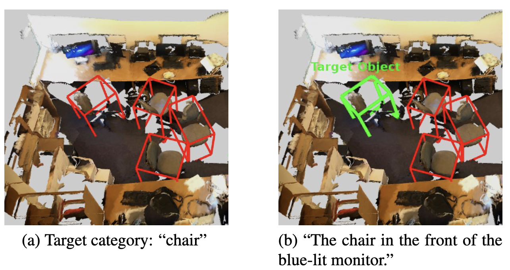

Modern image encoders achieve high generalization by decoupling semantic meaning from resolution, an ability yet to be fully realized in the 3D domain. We investigate the failure of 3D point cloud encoders to achieve similar generalization and find that existing models are highly sensitive to sampling resolution and scale changes, leading to significant performance degradation. This sensitivity is a major bottleneck for real-world deployment in robotics, as it suggests models overfit to specific quantization densities and object scales rather than learning invariant semantic features. To mitigate this dependency, we propose \textit{Invaria}, a point cloud encoder that achieves scale and density invariance through next-resolution prediction and receptive field calibration. While our objective is not the explicit generation of high-resolution point clouds, we find that this training objective encourages the model to learn robust, structural invariants. The resulting encoder achieves significant performance gains during resolution shifts while maintaining high efficiency through a compact model size and reduced token requirements. Specifically, on ScanNet, Invaria achieves a 56.0\% higher mIoU at 3$\times$ lower resolution and a 20\% improvement when the objects scale is reduced by a factor of 3. These gains are achieved with a 45\% smaller model size and an average reduction of 40\% in input tokens.
Pick a scene, then orbit any panel — all viewers stay in sync. Each model cell is split: default resolution on the left, lower resolution on the right. For visualization, both predictions are projected back to the original (full-density) point cloud, so the two halves share the same geometry and only the per-point labels differ.